← 返回阅读库 · 原论文目录
论文讲解阅读文档 · 论文精读 · v222
Transformer颤抖吧！我CNN又回来了！OverLoCK
视频时长 00:07:31；讲解文字 2,350 字符；提取讲解画面 127 张。按视频原顺序阅读，每段文字保留时间戳。
文字来自整段视频的自动语音转写，按自然停顿分段，并与 PPT / 论文页面 / 演示画面对齐。未将讲解压缩为摘要；术语、数字和口述公式请结合画面及原论文核对。 阅读稿已校正规范部分明确术语误识别；原始逐字稿和每处修改记录另行保留。
讲解画面为源视频截图（640×360），不是可编辑 PPT 文件。全片按每秒 2 帧扫描内容变化，逐步展开页保留；连续动画保留代表画面。清晰度受源视频限制。
下载完整资料包 · 含离线 HTML、PDF、Word、全部 PPT 画面和字幕。
原论文与材料
OverLoCK: An Overview-first-Look-Closely-next ConvNet with Context-Mixing Dynamic Kernels · 下载完整 PDF（15 页）
按时间阅读
00:00:00–00:00:04 · 画面 001
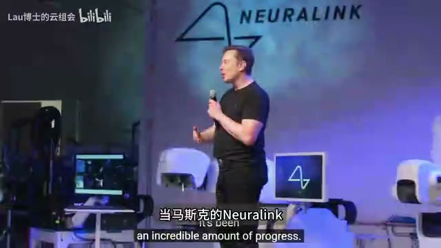
00:00:00–00:00:04 · 画面 001巴马斯克的六令解码人类视觉皮层信号，巴马斯克用 Blackwell Ultra 芯片拉爆 AI 算力极限。2025 年所有 AI 大佬都在赌一个终极答案，如果让机器像人类一样观察世界，这就是今天要解密的 CVPR 高分论文 OverLoCK，全球首个让卷积神经网络学会脑补的仿生视觉架构。
00:00:04–00:00:08 · 画面 002
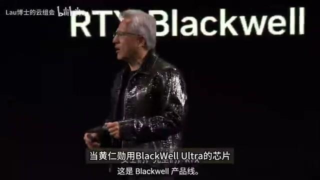
00:00:04–00:00:08 · 画面 00200:00:08–00:00:12 · 画面 003
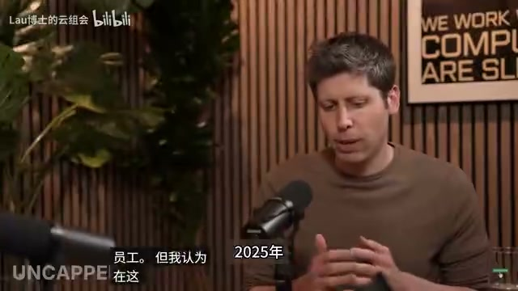
00:00:08–00:00:12 · 画面 00300:00:12–00:00:16 · 画面 004
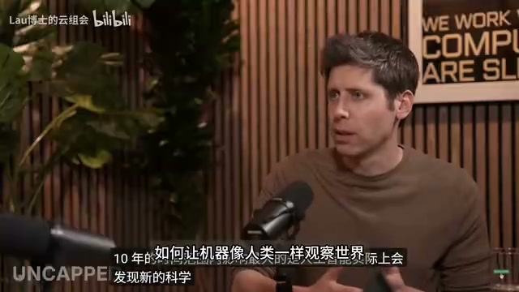
00:00:12–00:00:16 · 画面 00400:00:16–00:00:20 · 画面 005
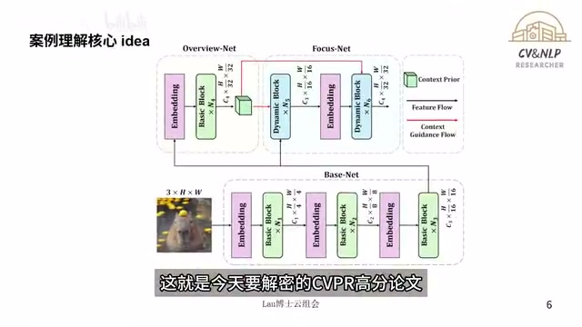
00:00:16–00:00:20 · 画面 00500:00:20–00:00:24 · 画面 006
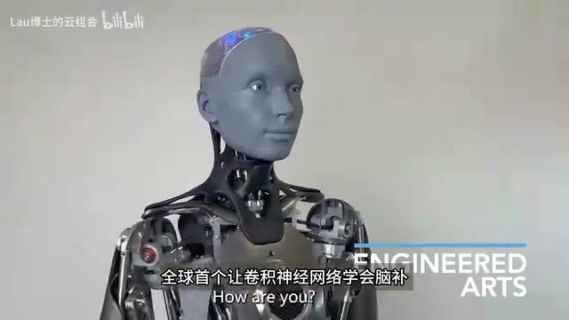
00:00:20–00:00:24 · 画面 00600:00:24–00:00:26 · 画面 007
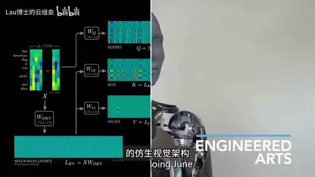
00:00:24–00:00:26 · 画面 007它直接杠翻 Transformer 和 Mamba 两巨头，仅用 3CN 参数就爆刷 84.2%的 ImageNet 精度，让卷积再次伟大。欢迎来到力武博士的云主会，我每周都将至少有一篇高质量的论文精读发布出来。相信在一系列的论文学习以后，你就能成为人工智能领域的专家。在正式解读论文之前，我想先问大家一个问题，传统的 CNN 的最大的痛点是什么？没错，是感受野的局限。
00:00:26–00:00:29 · 画面 008
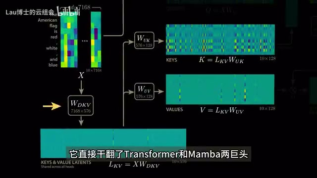
00:00:26–00:00:29 · 画面 00800:00:29–00:00:33 · 画面 009
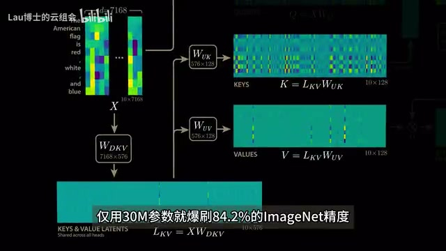
00:00:29–00:00:33 · 画面 00900:00:33–00:00:37 · 画面 010
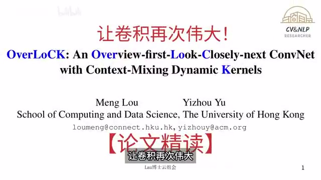
00:00:33–00:00:37 · 画面 01000:00:37–00:00:41 · 画面 011
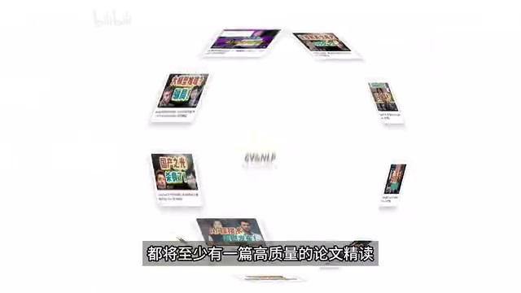
00:00:37–00:00:41 · 画面 01100:00:41–00:00:45 · 画面 012
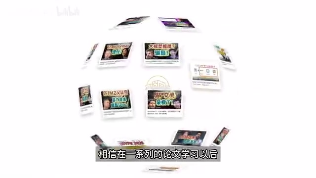
00:00:41–00:00:45 · 画面 01200:00:45–00:00:49 · 画面 013
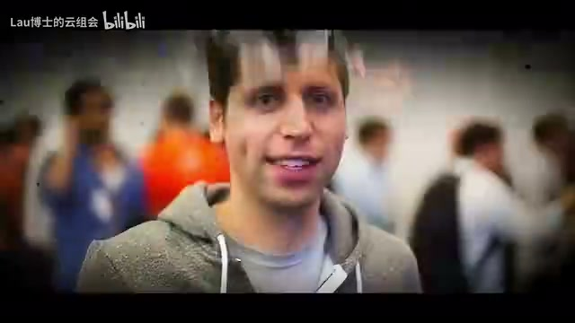
00:00:45–00:00:49 · 画面 01300:00:49–00:00:50 · 画面 014
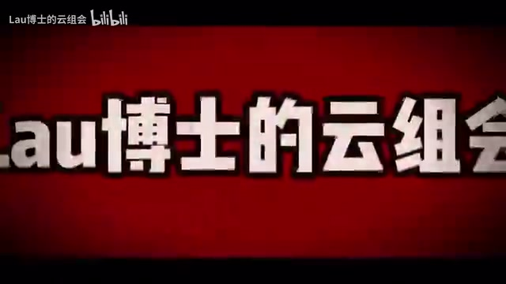
00:00:49–00:00:50 · 画面 01400:00:50–00:00:54 · 画面 015
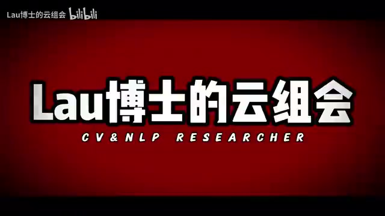
00:00:50–00:00:54 · 画面 01500:00:54–00:00:58 · 画面 016
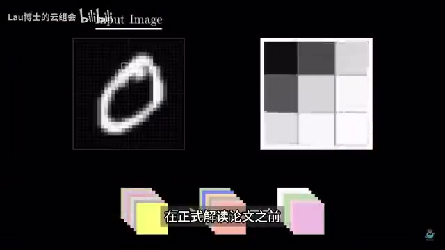
00:00:54–00:00:58 · 画面 01600:00:58–00:00:59 · 画面 017
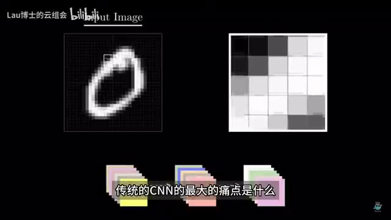
00:00:58–00:00:59 · 画面 01700:00:59–00:01:03 · 画面 018
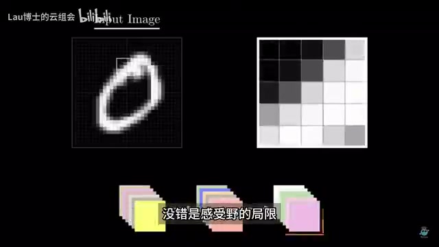
00:00:59–00:01:03 · 画面 018传统的 CNN 只能通过加深网络，让视野从局部慢慢扩展到全局，遵循着先看细节再拼整体的模式。但换个角度想，人类的视觉逻辑是怎么样的呢？比如在超市找一瓶可乐的时候，你会从入口就逐渐检查货架上的商品吗？先看包装的颜色形状，再核对标签的文字，哪怕遇到面包牛奶这些无关的物品也足以确认吗？
00:01:03–00:01:04 · 画面 019
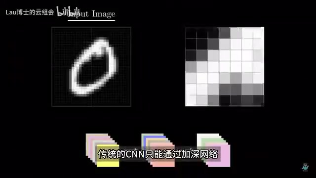
00:01:03–00:01:04 · 画面 01900:01:04–00:01:06 · 画面 020
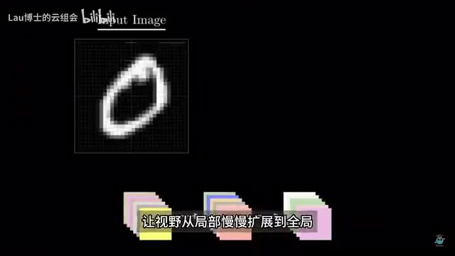
00:01:04–00:01:06 · 画面 02000:01:06–00:01:08 · 画面 021
00:01:06–00:01:08 · 画面 02100:01:08–00:01:09 · 画面 022
00:01:08–00:01:09 · 画面 02200:01:09–00:01:12 · 画面 023
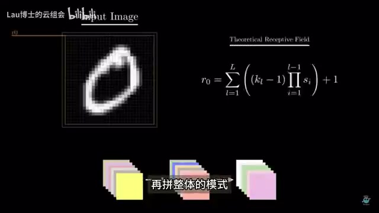
00:01:09–00:01:12 · 画面 02300:01:12–00:01:16 · 画面 024
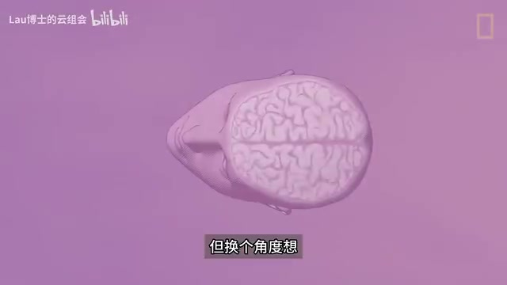
00:01:12–00:01:16 · 画面 02400:01:16–00:01:17 · 画面 025
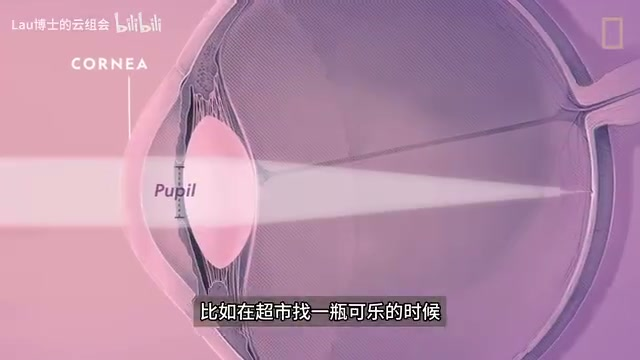
00:01:16–00:01:17 · 画面 02500:01:17–00:01:21 · 画面 026
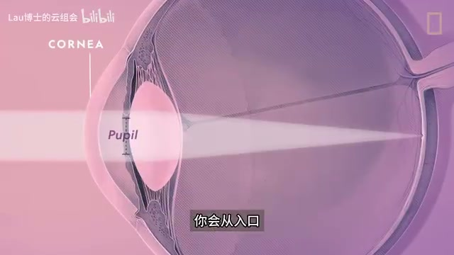
00:01:17–00:01:21 · 画面 02600:01:21–00:01:25 · 画面 027
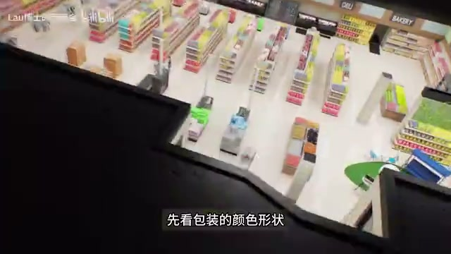
00:01:21–00:01:25 · 画面 02700:01:25–00:01:29 · 画面 028
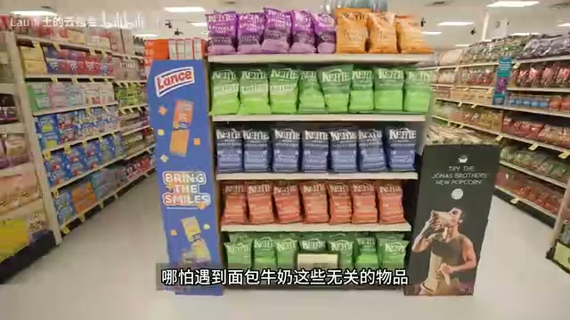
00:01:25–00:01:29 · 画面 02800:01:29–00:01:33 · 画面 029
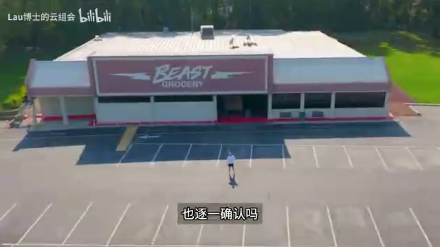
00:01:29–00:01:33 · 画面 029还是会先快速的扫一眼全局，确定饮料区在左侧，再走进饮料区专门寻找可乐呢？相信多数人都会选择后者，先快速的掌握全局的场景，再聚焦细节。这个看似日常的行为恰恰揭示了人类视觉的高效机制，也是 OverLoCK 这篇文章核心的灵感来源。
00:01:33–00:01:37 · 画面 030
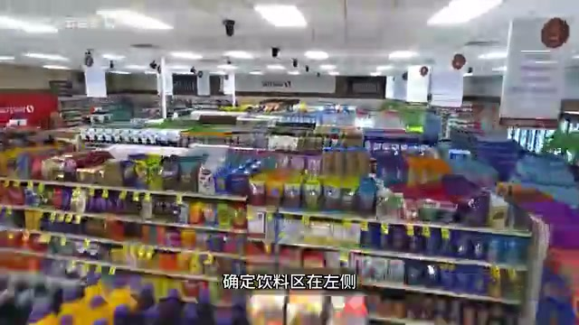
00:01:33–00:01:37 · 画面 03000:01:37–00:01:41 · 画面 031
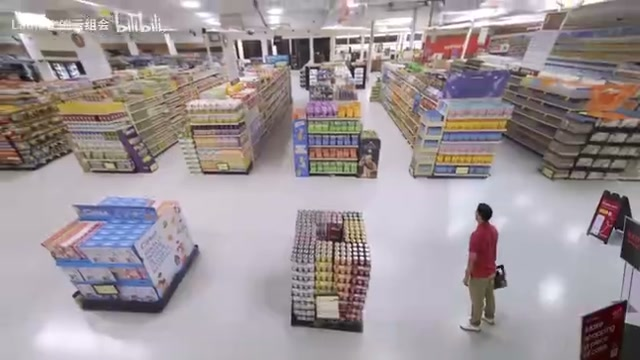
00:01:37–00:01:41 · 画面 03100:01:41–00:01:44 · 画面 032
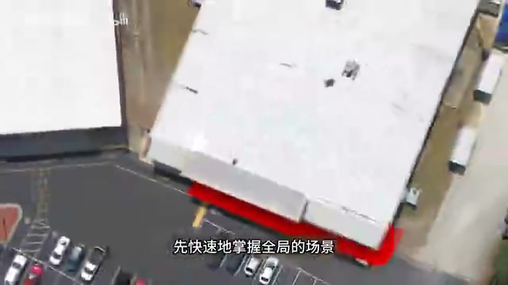
00:01:41–00:01:44 · 画面 03200:01:44–00:01:47 · 画面 033
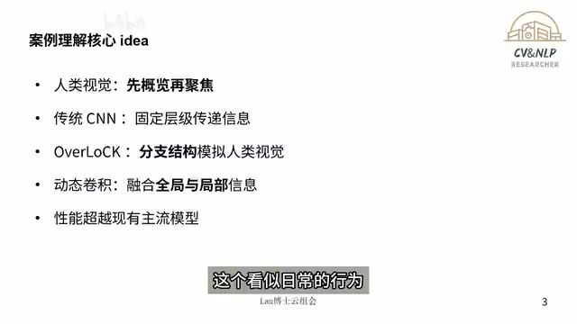
00:01:44–00:01:47 · 画面 03300:01:47–00:01:51 · 画面 034
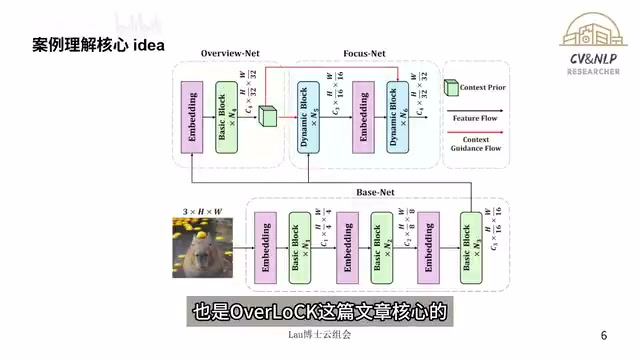
00:01:47–00:01:51 · 画面 034我们从表中可以看到，OverLoCK 包含四个核心模块，其中 Base-Net 负责捕捉基础的视觉信号，OverviewNet 用少量的计算生成了全局的信息，Focus-Net 则是细节专家，在 OverviewNet 的指导下深入处理。
00:01:51–00:01:56 · 画面 035
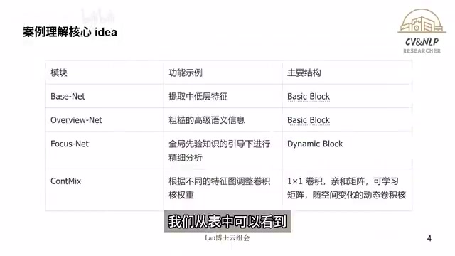
00:01:51–00:01:56 · 画面 03500:01:56–00:02:03 · 画面 036
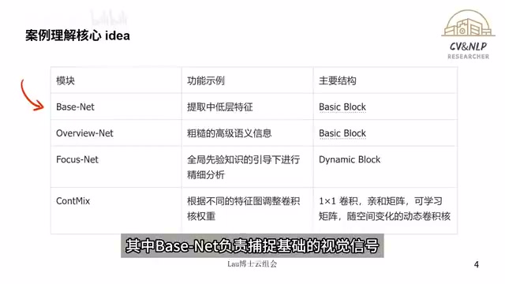
00:01:56–00:02:03 · 画面 03600:02:03–00:02:04 · 画面 037
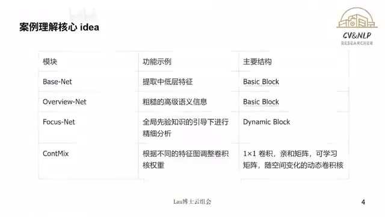
00:02:03–00:02:04 · 画面 03700:02:04–00:02:11 · 画面 038
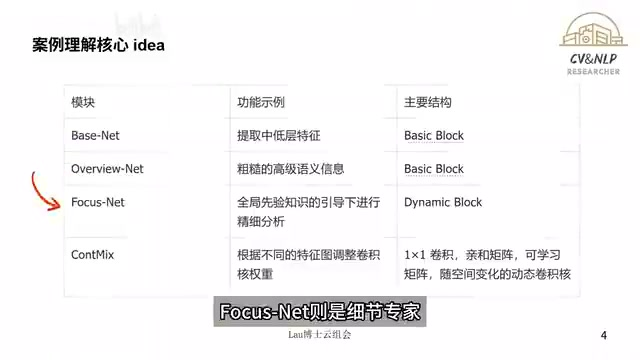
00:02:04–00:02:11 · 画面 038当输入一张超市的全景图时 Base-Net 首先工作它会捕捉商品的颜色比如红色、绿色形状比如瓶装或是盒装等等的基础特征类似你记住了饮料通常是瓶装的那 Overview Net 随后会快速的分析全局标记左侧是饮料区就像你少一眼就划定了范围
00:02:11–00:02:27 · 画面 039
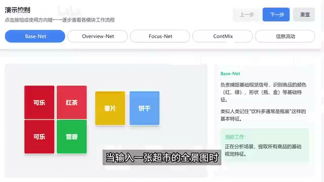
00:02:11–00:02:27 · 画面 03900:02:27–00:02:28 · 画面 040
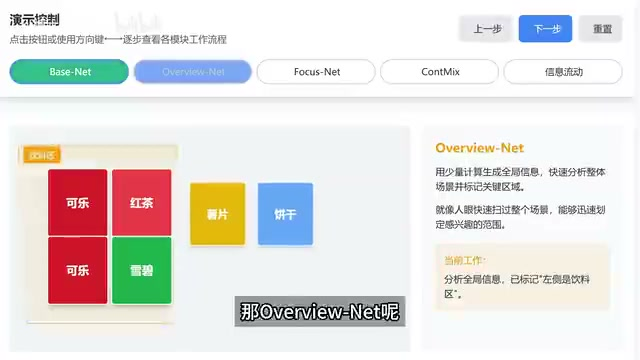
00:02:27–00:02:28 · 画面 04000:02:28–00:02:29 · 画面 041
00:02:28–00:02:29 · 画面 04100:02:29–00:02:32 · 画面 042
00:02:29–00:02:32 · 画面 04200:02:32–00:02:33 · 画面 043
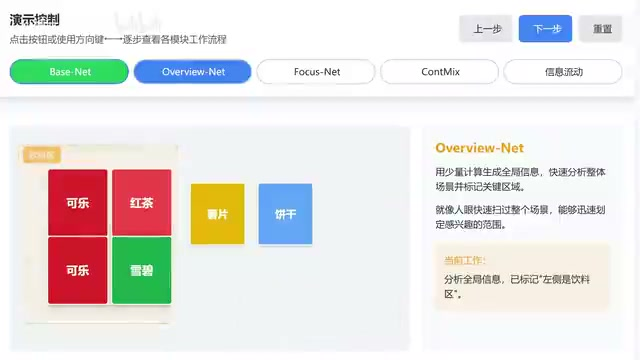
00:02:32–00:02:33 · 画面 04300:02:33–00:02:34 · 画面 044
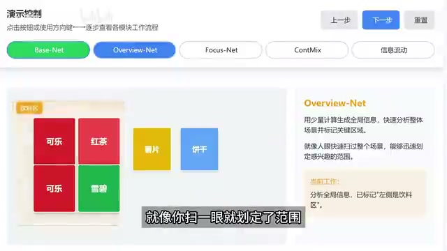
00:02:33–00:02:34 · 画面 04400:02:34–00:02:35 · 画面 045
00:02:34–00:02:35 · 画面 04500:02:35–00:02:38 · 画面 046
00:02:35–00:02:38 · 画面 046FocusNet 在指导下聚焦饮料区，筛选红色的频声，ContMix 的动态卷积就在这里发挥了关键的作用。它根据 OverviewNet 的全局信息调整了权重，专门识别。
00:02:38–00:02:39 · 画面 047
00:02:38–00:02:39 · 画面 04700:02:39–00:02:40 · 画面 048
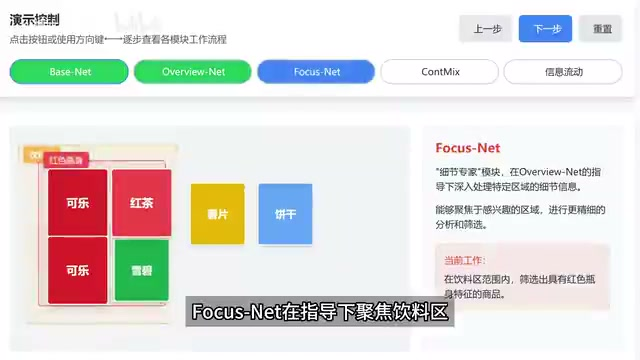
00:02:39–00:02:40 · 画面 04800:02:40–00:02:41 · 画面 049
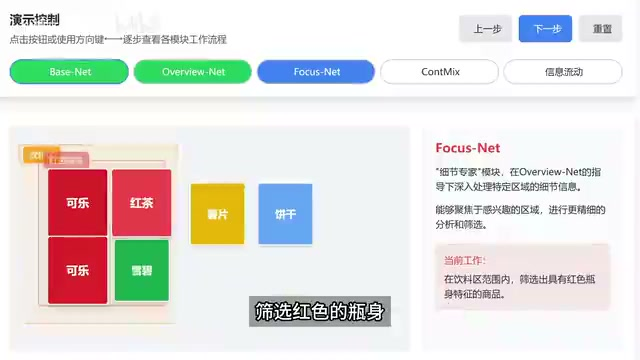
00:02:40–00:02:41 · 画面 04900:02:41–00:02:44 · 画面 050
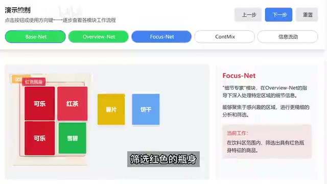
00:02:41–00:02:44 · 画面 05000:02:44–00:02:46 · 画面 051
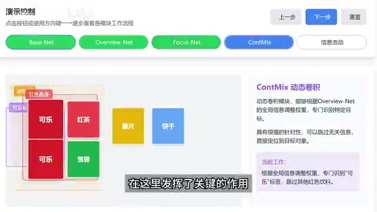
00:02:44–00:02:46 · 画面 05100:02:46–00:02:48 · 画面 052
00:02:46–00:02:48 · 画面 05200:02:48–00:02:51 · 画面 053
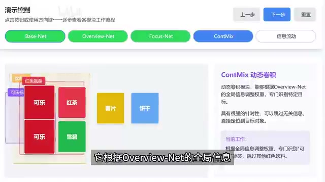
00:02:48–00:02:51 · 画面 05300:02:51–00:02:52 · 画面 054
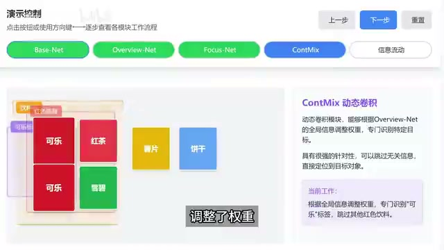
00:02:51–00:02:52 · 画面 05400:02:52–00:02:54 · 画面 055
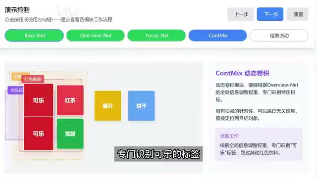
00:02:52–00:02:54 · 画面 055可乐的标签，跳过其他红色的饮料。OverLoCK 在上下文流动机制让信息在模块间动态的更新，这种设计解决了传统 CNN 信息单向传递的缺陷，并通过了分层的逻辑高效定位表 1 当中的各个版本的通道和快速配置都是为了优化这种信息流动的效率，是不是一下就清晰了？
00:02:54–00:02:55 · 画面 056
00:02:54–00:02:55 · 画面 05600:02:55–00:02:56 · 画面 057
00:02:55–00:02:56 · 画面 05700:02:56–00:02:57 · 画面 058
00:02:56–00:02:57 · 画面 05800:02:57–00:02:59 · 画面 059
00:02:57–00:02:59 · 画面 05900:02:59–00:03:00 · 画面 060
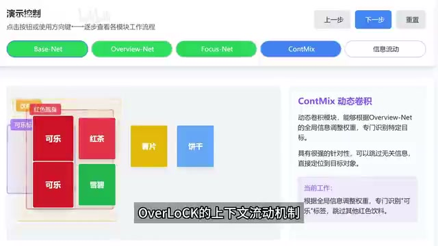
00:02:59–00:03:00 · 画面 06000:03:00–00:03:01 · 画面 061
00:03:00–00:03:01 · 画面 06100:03:01–00:03:02 · 画面 062
00:03:01–00:03:02 · 画面 06200:03:02–00:03:11 · 画面 063
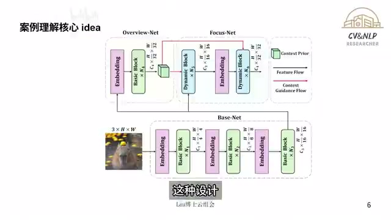
00:03:02–00:03:11 · 画面 06300:03:11–00:03:19 · 画面 064
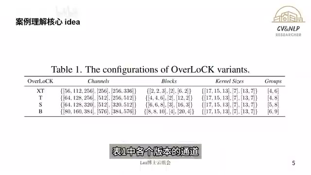
00:03:11–00:03:19 · 画面 06400:03:19–00:03:23 · 画面 065
00:03:19–00:03:23 · 画面 065云组会的团队花了好几天的时间反复的 battle 最终才选出了这个例子串联 OverLoCK 的各个模块是不是值得各位同学三连支持一下呢?图示中的 basic block 主要是由三类卷积注意力机制残差结构组成下面的 dynamic block 则主要是由两类卷积 GDSA 残差结构组成
00:03:23–00:03:27 · 画面 066
00:03:23–00:03:27 · 画面 06600:03:27–00:03:31 · 画面 067
00:03:27–00:03:31 · 画面 06700:03:31–00:03:38 · 画面 068
00:03:31–00:03:38 · 画面 06800:03:38–00:03:40 · 画面 069
00:03:38–00:03:40 · 画面 06900:03:40–00:03:50 · 画面 070
00:03:40–00:03:50 · 画面 070GDSA 里面的 ContMix 是本文最核心的关键点之一，我们来看图 5A 的特征图，在实施了注意力机制以后得到亲和矩阵 A，在这里有需要关注的全局信息，接着会通过可学习的线性层得到动态卷积，这个动态卷积会参与到后续的计算当中。
00:03:50–00:04:09 · 画面 071
00:03:50–00:04:09 · 画面 07100:04:09–00:04:10 · 画面 072
00:04:09–00:04:10 · 画面 072结合前面超市找可乐的案例，大家可能会问，欧洛相比传统的 CNN 到底强在哪里呢？主要有两个方面，第一视觉机制的革新，传统的 CNN 只能从局部的像素开始组成的拼接特征，而欧洛以鲜艳的方式模仿了人类先盖蓝再聚焦的逻辑，跳过了无关的区域，这种目标导向的机制大幅的减少了无效的计算，第二卷积核的动态性。
00:04:10–00:04:12 · 画面 073
00:04:10–00:04:12 · 画面 07300:04:12–00:04:14 · 画面 074
00:04:12–00:04:14 · 画面 07400:04:14–00:04:15 · 画面 075
00:04:14–00:04:15 · 画面 07500:04:15–00:04:19 · 画面 076
00:04:15–00:04:19 · 画面 07600:04:19–00:04:22 · 画面 077
00:04:19–00:04:22 · 画面 07700:04:22–00:04:24 · 画面 078
00:04:22–00:04:24 · 画面 07800:04:24–00:04:28 · 画面 079
00:04:24–00:04:28 · 画面 07900:04:28–00:04:29 · 画面 080
00:04:28–00:04:29 · 画面 08000:04:29–00:04:31 · 画面 081
00:04:29–00:04:31 · 画面 08100:04:31–00:04:32 · 画面 082
00:04:31–00:04:32 · 画面 08200:04:32–00:04:33 · 画面 083
00:04:32–00:04:33 · 画面 08300:04:33–00:04:36 · 画面 084
00:04:33–00:04:36 · 画面 08400:04:36–00:04:40 · 画面 085
00:04:36–00:04:40 · 画面 085传统的 CNN 的卷积核是固定的模板，比如 3x3 的核只能用同一组的权重去扫描所有的区域，这样子的话效率很低，而 OverLoCK 的 ContMix 的卷积能够根据全局信息动态的调整权重，这种按需调整的能力就能让模型能很精准的捕捉关键的特征。OverLoCK 在哪些地方是有明显的提升呢?第一计算效率的提升。
00:04:40–00:04:44 · 画面 086
00:04:40–00:04:44 · 画面 08600:04:44–00:04:48 · 画面 087
00:04:44–00:04:48 · 画面 08700:04:48–00:04:52 · 画面 088
00:04:48–00:04:52 · 画面 08800:04:52–00:04:56 · 画面 089
00:04:52–00:04:56 · 画面 08900:04:56–00:05:00 · 画面 090
00:04:56–00:05:00 · 画面 09000:05:00–00:05:01 · 画面 091
00:05:00–00:05:01 · 画面 09100:05:01–00:05:05 · 画面 092
00:05:01–00:05:05 · 画面 09200:05:05–00:05:18 · 画面 093
00:05:05–00:05:18 · 画面 093表 2 显示 OverLoCK T 的 FLOPs 仅是 2.6G 却比 2.9G 的 Cosformer T 的准确率高出了 1.2%2. 鲁棒性更强尤其是在表 H 的 Scratch、OverLoCK B 相比其他的方法效果十分显著 3. 性能多面的领先 OverLoCK 在图像分类目标检测语义分割超越了不少近年的主流方法另外我们来看到图 1
00:05:18–00:05:19 · 画面 094
00:05:18–00:05:19 · 画面 09400:05:19–00:05:25 · 画面 095
00:05:19–00:05:25 · 画面 09500:05:25–00:05:40 · 画面 096
00:05:25–00:05:40 · 画面 096那在图一里面的显示更为的直观，在相同的计算量下，OverLoCK 的准确率几乎总是更高的。说到这里，再给不熟悉我们的同学介绍一下本频道六博士云组会的自律，打造一站式人工智能交流平台，用尽可能好理解的语言让每位同学都能了解 AI 最前沿的内容。
00:05:40–00:05:41 · 画面 097
00:05:40–00:05:41 · 画面 09700:05:41–00:05:44 · 画面 098
00:05:41–00:05:44 · 画面 09800:05:44–00:05:53 · 画面 099
00:05:44–00:05:53 · 画面 09900:05:53–00:06:03 · 画面 100
00:05:53–00:06:03 · 画面 100除了视频以外，也欢迎大家加入云组会的知识星球，我们做了三件事，第一系统性的拆解了热门领域的学习路线，帮你的避开无效的努力，第二每日更新精选文献解读，省去 80%的检索时间，三建立专家学者交流群，不定期掉落福利，直接与专家学者互动交流，深度参与选题，云组会欢迎各位同学的加入。
00:06:03–00:06:05 · 画面 101
00:06:03–00:06:05 · 画面 10100:06:05–00:06:09 · 画面 102
00:06:05–00:06:09 · 画面 10200:06:09–00:06:11 · 画面 103
00:06:09–00:06:11 · 画面 10300:06:11–00:06:15 · 画面 104
00:06:11–00:06:15 · 画面 10400:06:15–00:06:19 · 画面 105
00:06:15–00:06:19 · 画面 10500:06:19–00:06:21 · 画面 106
00:06:19–00:06:21 · 画面 10600:06:21–00:06:23 · 画面 107
00:06:21–00:06:23 · 画面 10700:06:23–00:06:27 · 画面 108
00:06:23–00:06:27 · 画面 108这篇文章写得非常的精彩，换句话说故事讲得很好，指标也有比较显出的提升。如果大家有关注近五年的视觉相关的工作，会发现其实分阶段的全局以及局部特征的融合，动态的权重这些方法都是常用的。在这里我也想和很多刚开始接触科研的同学说，其实大部分的研究都不是惊天动地的。
00:06:27–00:06:31 · 画面 109
00:06:27–00:06:31 · 画面 10900:06:31–00:06:35 · 画面 110
00:06:31–00:06:35 · 画面 11000:06:35–00:06:38 · 画面 111
00:06:35–00:06:38 · 画面 11100:06:38–00:06:41 · 画面 112
00:06:38–00:06:41 · 画面 11200:06:41–00:06:44 · 画面 113
00:06:41–00:06:44 · 画面 11300:06:44–00:06:45 · 画面 114
00:06:44–00:06:45 · 画面 11400:06:45–00:06:48 · 画面 115
00:06:45–00:06:48 · 画面 11500:06:48–00:06:52 · 画面 116
00:06:48–00:06:52 · 画面 116大家的创新性和工作量都不会差太多，但为什么有些人发顶汇，有些连个水柑都种不了呢？那核心就在包装上。一个好的切入点能引起神感人的兴趣，就已经成功一半了。当然这里并不是说只看包装就不顾方法的质量了，而是同学们在写论文的时候不妨多往包装上去想一想，就像给自己的方法打广告，那这样子往往能够事半功倍。
00:06:52–00:06:56 · 画面 117
00:06:52–00:06:56 · 画面 11700:06:56–00:07:00 · 画面 118
00:06:56–00:07:00 · 画面 11800:07:00–00:07:04 · 画面 119
00:07:00–00:07:04 · 画面 11900:07:04–00:07:08 · 画面 120
00:07:04–00:07:08 · 画面 12000:07:08–00:07:12 · 画面 121
00:07:08–00:07:12 · 画面 12100:07:12–00:07:16 · 画面 122
00:07:12–00:07:16 · 画面 12200:07:16–00:07:19 · 画面 123
00:07:16–00:07:19 · 画面 12300:07:19–00:07:23 · 画面 124
00:07:19–00:07:23 · 画面 124那原文的链接也放在了视频的简介里了，感兴趣的同学可以自行跳转观看。欢迎关注云组会，我们下期再见。
00:07:23–00:07:27 · 画面 125
00:07:23–00:07:27 · 画面 12500:07:27–00:07:31 · 画面 126
00:07:27–00:07:31 · 画面 12600:07:31–00:07:31 · 画面 127
00:07:31–00:07:31 · 画面 127转写与来源说明 · 0 个自动复核提示
保留 18 个原始语音片段，0 个片段触发自动复核提示。提示仅用于定位可能的术语、重复或识别问题，不等于已确认错误。
讲解画面为源视频截图（640×360），不是可编辑 PPT 文件。全片按每秒 2 帧扫描内容变化，逐步展开页保留；连续动画保留代表画面。清晰度受源视频限制。
原视频：paper/合集_2026-10-16_论文精读/Transformer颤抖吧！我CNN又回来了！OverLoCK【论文精读】.mp4
SHA-256：f313211510b4967f94dc370668bc3e925ad1117c1c619403f427604aea842152
全文按视频语音与画面制作。原论文可从上方链接下载；完整资料包保留全文、原始逐字稿、字幕和校对记录。